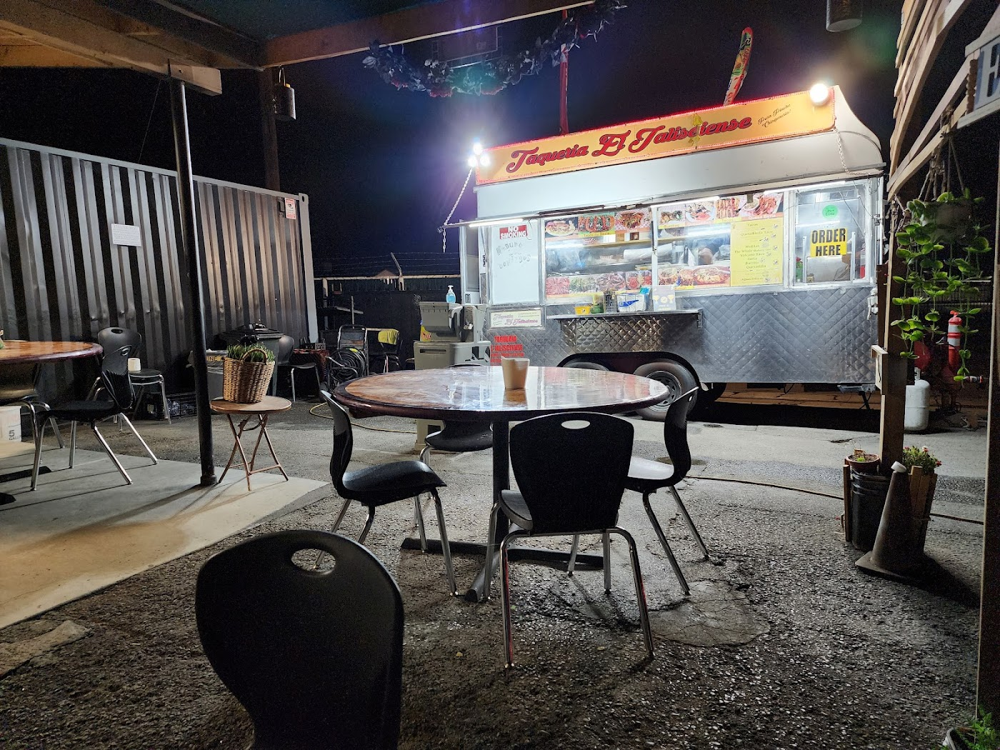
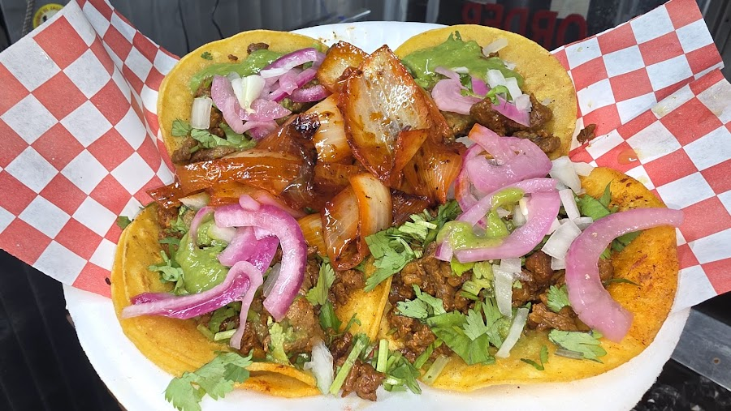
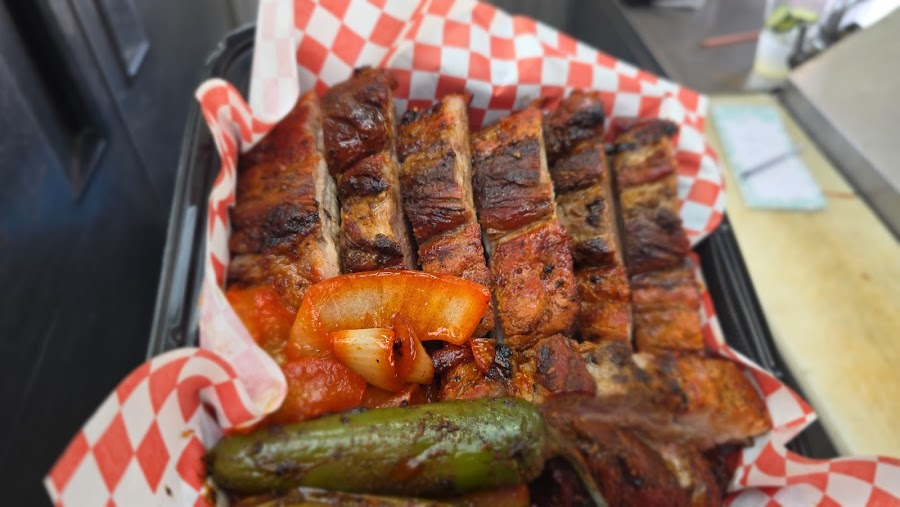
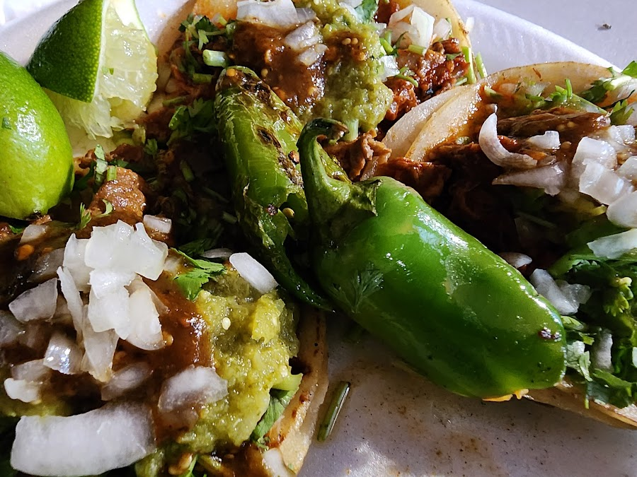
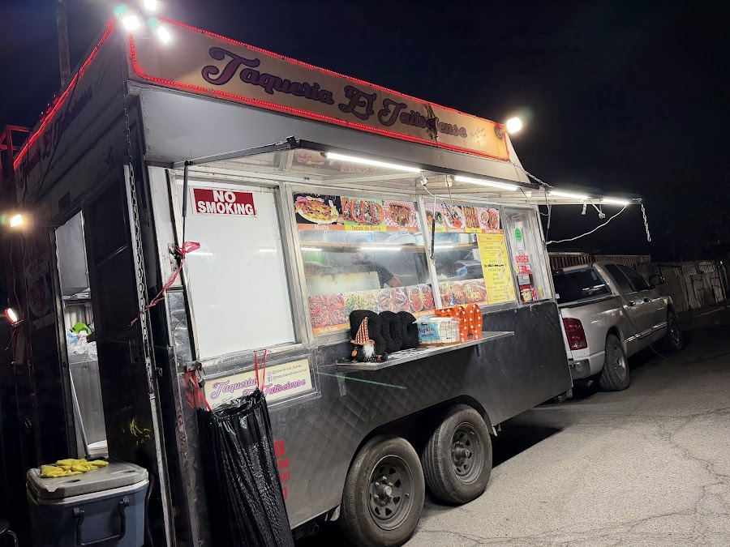

Auténtica · Estilo Jalisco · Bakersfield
A little truck off South Union with a big reputation — slow-grilled meats, fresh corn tortillas, and three salsas that mean business.
Ranked the #1 Taco Spot in Kern CountyEl Jalisciense is a family food truck serving the South Union neighborhood the way our grandparents did it back home: marinated meats over open heat, tortillas pressed fresh, and salsas built by hand. Nothing pre-made, nothing rushed.
From the first taste of the meat to those amazing corn tortillas and three different salsas, regulars say it plainly — they don't eat tacos anywhere else. Pull up under the lights, grab a seat, and find out why.





Once you get a taste of their tacos, you will LOVE them. The quality of the meat is the best, everything down to the grilled onions is mouth-watering, the fruit drinks so refreshing. We do not eat tacos anywhere else.
— SavMy favorite taco spot in all of Kern County. Everyone is always friendly and the food is always 1000/10. I love how spicy the salsa is.
— Karla M.The Number 1 taco spot ranked in Kern County — look no further. The Special Jalisciense Burrito with juicy thick steak, big shrimp and a spicy hot link, and their quesabirria tacos… best in the West. Must try!
— Marcos E.Delicious food and great customer service. From the amazing corn tortillas, to the tender marinated meat, to the three different salsas that are all so tasty — these guys really get after it.
— Kody C.Evenings Wed–Fri & all day Sunday — closed Mon, Tue & Sat.